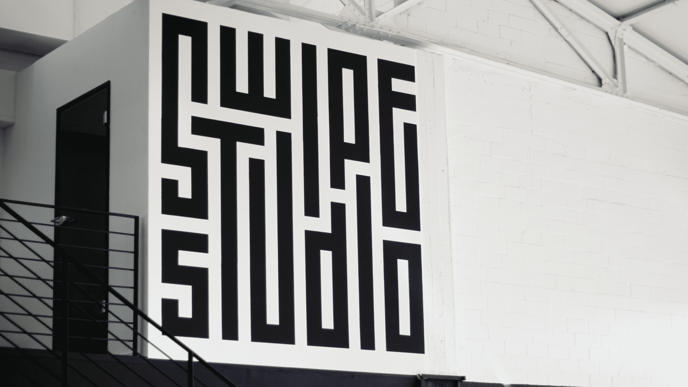

Swipe Studio
Identity
A mazing design studio
Swipe is SinnerSchraders mobile studio, specialized in creating awesome mobile experiences – and it is the studio I had the luck to absolve my three year graphic design apprenticeship in.
Founded in 2010, it has expanded over time and is now located in the cities of Hamburg, Berlin and Zurich. On a regular basis, we organize activities for team building or just hanging out and having a good time together. In 2019, the suggestion of printing and branding our own clothing by hand came up. The idea for the screen printing workshop was born and with it, the challenge to design appealing graphics that people would want to wear.
Being especially passionate in everything connected to typography and lettering, my wish was to create a bold and interesting logo mark. While gathering inspiration from calligraphers, lettering artists and designers, I found grid-based, geometric type to have especially interesting bold aesthetics with rich contrasts. The idea was set, so let’s start the work!
It all starts with pen and paper. For me personally, sketching is the very best way to get thoughts out of your head, visualize ideas, to test concepts and to see what works and what does not. In my opinion, sketches do not need to be works of art or look especially great. For designing, they are more of a helpful tool for the process.
 I.) Letters filling former logo shape II.) Combination of letters and outline of the logo shape
I.) Letters filling former logo shape II.) Combination of letters and outline of the logo shape
The first approach was to letter Swipe Studio to fit the geometric form of the former Swipe logo, which in the end did not end up working the way I imagined it to be.
 I.) First draft with longer wording II.) Roughly determining the letter shapes III.) Refining positions of the letters
I.) First draft with longer wording II.) Roughly determining the letter shapes III.) Refining positions of the letters
Instead, sketching the letters in the form of a grid seemed to be a much more promising approach. The interconnection and wrapping of the letters created an interesting aesthetic even in the quick sketches that needed to be explored further. After a few iterations the basic arrangement of the letters started to work out fine.
 Process of refining the sketch and turning it into digital
Process of refining the sketch and turning it into digital
Having set the basis, the next step was to arrange the letters in a geometric grid and to rebuild them as vectors.
Now the logo only needed some more tweaks to get the contrast and whitespace just right. Fortunately, the constructed form of the letters and the way it was built using stroke vectors allows for quick adjustments of thickness. Et voilà, the logomark is finished!
Below, you can find some impressions from the screen printing workshop and the print results. We printed the logo on tote bags, shirts and even laptop cases.
 The Swipe Studio logo painted on the studio wall in Hamburg
The Swipe Studio logo painted on the studio wall in Hamburg
Initially, the logo mark was designed and intended for having a fun screen printing workshop. But from this point, it started to live its own life. Over time, it was used more and more throughout the studio and eventually became the official Swipe logo that is now being used over several channels and painted over the walls in Hamburg, Berlin and Zurich.
Learn more about Swipe on
LinkedIn
or
Instagram.
Thanks for reading! 😊